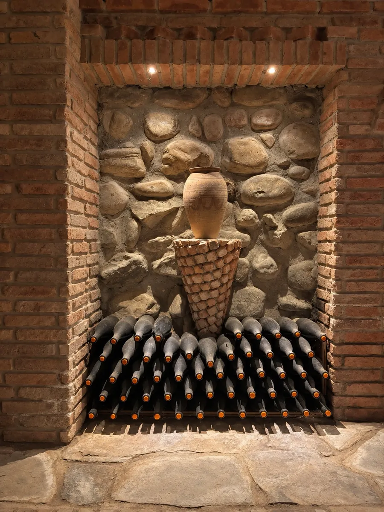

I
The foundation
Traditional Qvevri Wines
We make our wines using the traditional method in qvevri buried in the earth, where the wine naturally develops and matures. Our goal is to preserve in each wine the natural character of the grape, the distinctive qualities of its origin, and the authenticity of Georgian qvevri winemaking.
For Maiseli, the qvevri is more than a vessel — it is part of our family history.
- Saperavi Qvevri
- Kisi Qvevri
- Rkatsiteli Qvevri
- Tsolikouri Qvevri
